Réseau Wi-Fi : nom du réseau Wi-Fi
Mot de passe : mot de passe du Wi-Fi
bit.ly/remplacer-le-lien-par-celui-de-la-classe
Créez un NOUVEAU compte (suivez les consignes))
En partenariat avec 
Allez à l'adresse scratch.mit.edu
Si vous n'avez pas encore créé de compte allez ici :http://bit.ly/remplacez-le-lien-par-un-lien-vers-la-classe
Créez un NOUVEAU compte (suivez les consignes)
Diapositives créées par Christina Truong à partir de Lea Verou's SlideShow et de reveal.js.